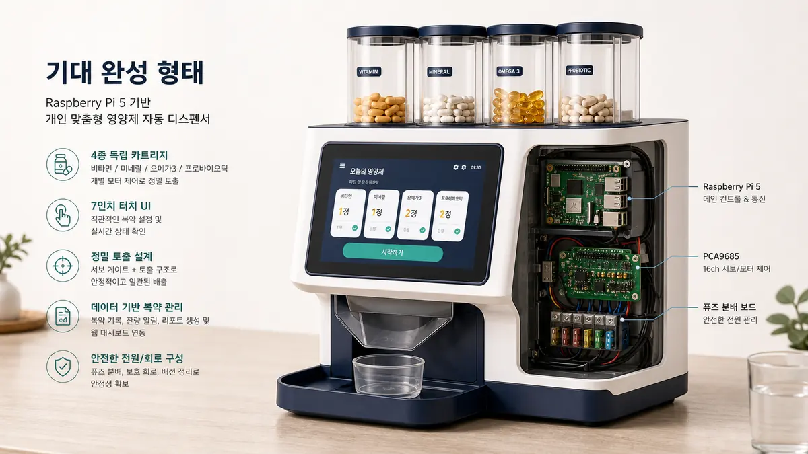
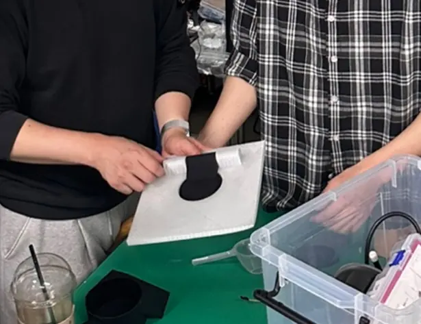
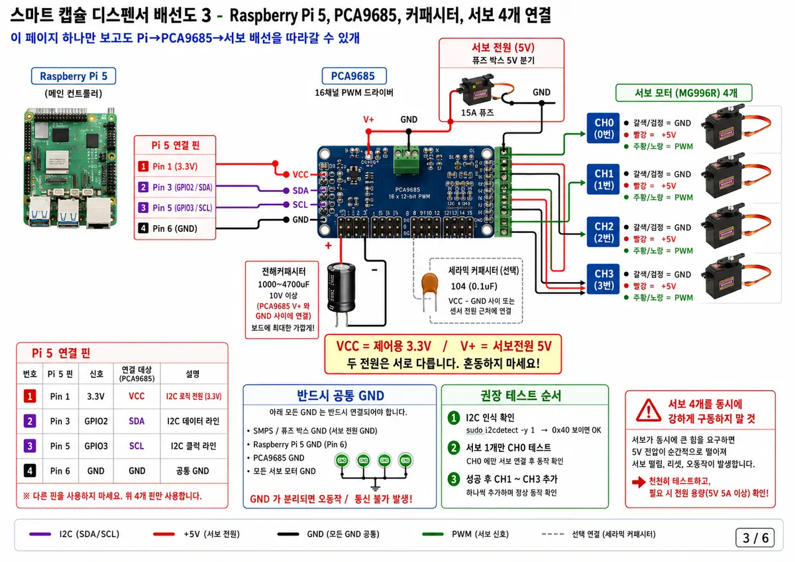
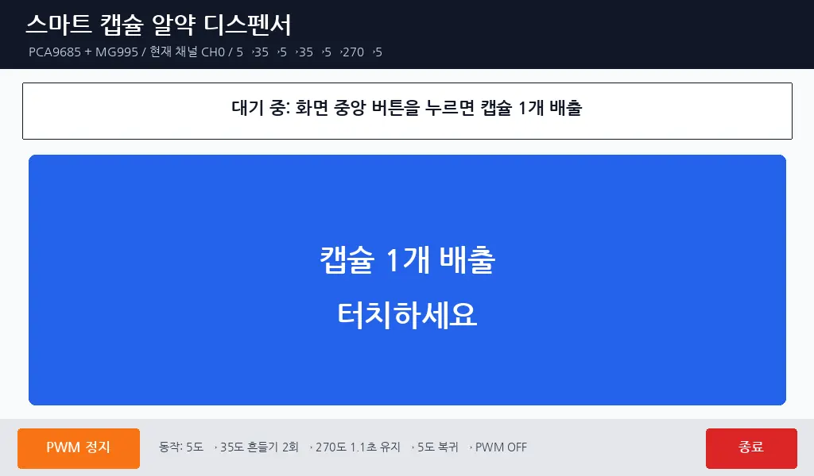
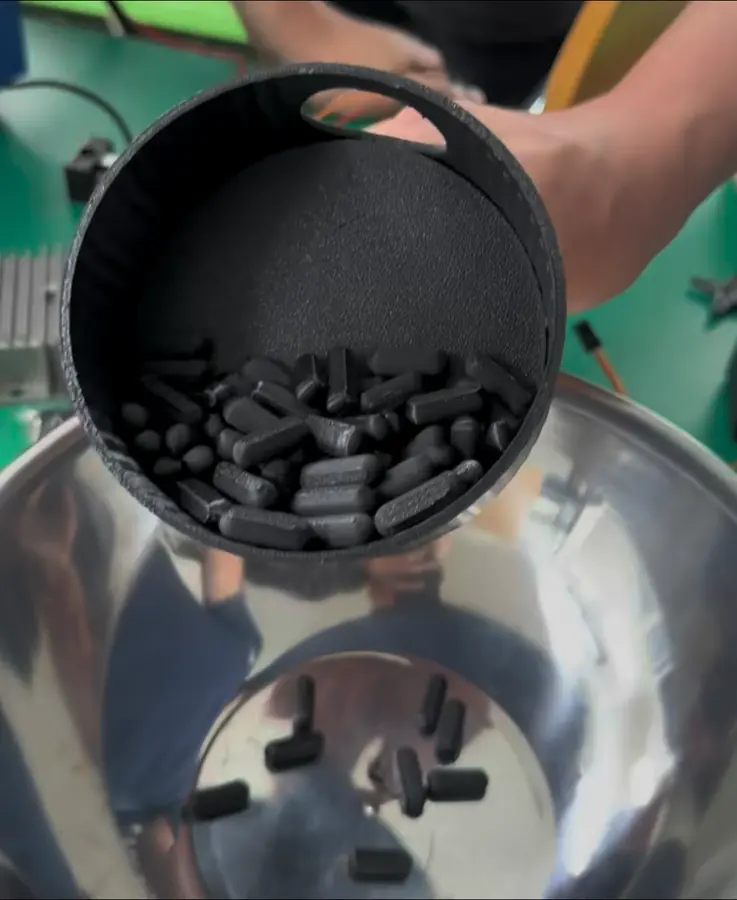
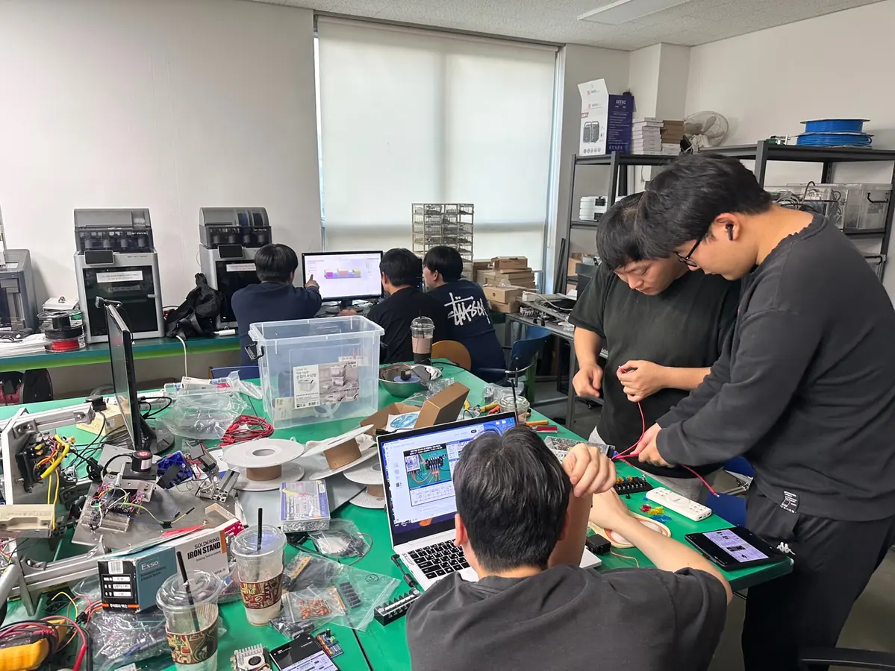

복용 시간을 놓치지 않으면서 여러 종류의 캡슐을 실제로 배출해야 했습니다.
4명이 설계·제작한 스마트 영양제 디스펜서
3단 디스크 구조와 사선 램프, 가로 원통형 토출구를 기반으로 한 자동 복용 보조 장치입니다.
이 프로젝트는 단순 알림 앱이 아니라, 정해진 시간에 실제 캡슐 배출까지 연결하는 학생 팀 프로젝트입니다. 기구 설계, 회로·전원, 제어·DB, 웹·문서·발표 파트를 4명이 분담해 설계부터 제작, 테스트, 시연 준비까지 함께 진행했습니다.
- 4명 기구·회로·제어·웹 분업 제작
- 3단 디스크 기반 캡슐 분리 구조
- 1 흐름 장전 → 램프 이동 → 수평 토출
- LIVE 정상·걸림·재시도 발표 시연

3단 디스크, 사선 램프, 가로 원통형 토출구로 캡슐 경로를 고정했습니다.
하드웨어 제작 사진, 회로도, UI 화면, 배출 테스트, 웹 시뮬레이터로 증빙합니다.
기능 소개가 아니라 실제 제작 과정과 팀 역할 분담이 드러나도록 구성했습니다.
4인 팀 역할 구조
발표에서 가장 먼저 보여줘야 하는 메시지는 이 프로젝트가 한 사람이 만든 데모가 아니라, 4명이 역할을 나누어 실제로 제작한 결과물이라는 점입니다.
기구 설계
3단 디스크 구조와 캡슐 낙하 경로를 실제 제작 가능한 형상으로 설계했습니다.
- 3단 디스크 구조 설계
- 사선 램프와 캡슐 포켓 정리
- 가로 토출구와 컵 정렬 구조 검토
- SolidWorks 모델링 및 출력 파츠 점검
회로·전원
모터 구동과 전원 안정화를 담당하며 실제 배선과 보호 구성을 정리했습니다.
- 모터 구동 채널 연결
- 전원 분배와 퓨즈 보호 구성
- 센서 및 구동부 배선 정리
- 하드웨어 조립과 테스트 환경 구성
제어·DB
복용 스케줄과 배출 로직, 기록 저장, 오류 처리 흐름을 제어 관점에서 설계했습니다.
- 복용 스케줄 처리 로직
- 순차 배출 및 상태 전이 설계
- 이력 저장과 상태 기록 구조
- 걸림 감지 및 재시도 흐름 정리
웹·문서·발표
발표용 웹사이트와 시뮬레이터, 시각자료, 발표 흐름을 정리해 시연 경험을 구성했습니다.
- 발표 웹사이트 구조 설계
- 웹 시뮬레이터 제작
- 시각자료와 증빙 정리
- 발표 흐름과 설명 포인트 구성
문제 정의
- 복용 시간을 놓치기 쉽다 정해진 시간마다 알림만으로는 실제 복용 행동까지 연결되기 어렵습니다.
- 여러 종류의 캡슐을 나눠 배출해야 한다 한 번에 섞여 나오는 것이 아니라 종류별로 정해진 양을 분리해 처리해야 합니다.
- 물리적 배출까지 이어져야 한다 기록과 알림뿐 아니라 실제 토출 구조가 있어야 발표 메시지가 설득력을 가집니다.
솔루션 구조
01. 3단 디스크 기반 분리
캡슐 포켓을 층별로 분리해 순차적으로 1정씩 이동 경로에 올립니다.
02. 사선 램프 이동
분리된 캡슐이 경사면을 따라 안정적으로 아래 방향으로 이동합니다.
03. 가로 원통형 토출
마지막 구간에서 수평 토출구를 따라 외부 컵으로 정리된 배출이 이루어집니다.
04. 제어·DB 연동
배출 상태, 감지 결과, 복용 기록을 웹과 데이터 흐름으로 함께 설명할 수 있습니다.
핵심 구조는 보이는 흐름으로 설명할 수 있어야 했습니다.
발표자는 “캡슐이 어디서 분리되고, 어디로 이동하고, 어떤 방향으로 최종 배출되는지”를 한 번에 설명해야 합니다. 그래서 구조 소개 섹션도 실제 캡슐 이동 순서를 기준으로 구성했습니다.
종류별 캡슐을 층별로 정리하고 포켓 단위로 배출 시작 위치를 고정
포켓에서 나온 캡슐이 중력 방향으로 정리되며 다음 구간으로 이동
최종적으로 외부 컵 방향으로 캡슐을 안정적으로 안내하는 마감 구조
배출 상태, 걸림, 재시도, 기록 저장을 발표용 화면과 함께 확인
실제 제작 증빙
완성 예상 렌더, 모델링 과정, 회로·전원 구성, 제어 화면, 테스트 장면, 웹 시뮬레이터까지 한 프로젝트의 산출물로 보이도록 연결했습니다.
완성 예상 렌더
프로젝트가 지향하는 최종 제품 형태
하드웨어, UI, 토출 구조가 한 몸처럼 보이는 최종 구성을 발표 첫 장면에서 제시합니다.

기구 설계
모델링과 파츠 검토
캡슐 경로를 실제 부품 형상으로 검토하며 램프와 포켓 위치를 조정했습니다.

회로 / 전원
배선도와 전원 분배
서보 구동, 센서 연결, 전원 보호를 한 장의 회로 자료로 정리해 설명할 수 있습니다.

제어 / DB
터치 UI와 상태 기록 흐름
배출 시작, 상태 표시, 복약 기록 화면을 묶어 사용자 관점의 흐름을 보여줍니다.

테스트
실제 배출 검증 장면
캡슐이 실제로 분리되고 토출되는 장면을 테스트 자료로 확보했습니다.
제작 과정 타임라인
발표자가 자연스럽게 설명할 수 있도록 아이디어 정의부터 발표 웹 제작까지의 흐름을 단계별로 정리했습니다.
아이디어 정의
복용 시간을 놓치는 문제와 자동 배출 필요성을 팀 주제로 설정
구조 설계
3단 디스크와 사선 램프, 가로 토출구 개념을 구체화
파츠 모델링
SolidWorks 기반으로 포켓, 램프, 하우징, 토출 경로를 설계
회로 / 제어 연결
모터 구동, 전원 분배, 센서 감지, 상태 기록 로직을 조립
배출 테스트
캡슐 분리, 걸림 여부, 배출 경로 안정성을 실제로 검증
발표 웹 제작
팀 역할, 증빙 자료, 구조 설명, 시뮬레이터를 발표 흐름에 맞게 정리
개선점 정리
센서 피드백, 캡슐 호환성, 모바일 연동 가능성을 후속 과제로 분리
실제 제작 현장이 보이는 팀 프로젝트
작업실에서 함께 모델링을 검토하고, 배선을 정리하고, 파츠를 맞춰보며 만든 결과물이라는 점이 발표에서 신뢰를 만들어 줍니다. 웹사이트도 그 맥락이 보이도록 실제 작업 장면을 적극적으로 사용했습니다.

기술 구조
기구, 제어, 데이터, 발표 레이어를 나누어 설명하면 프로젝트의 범위와 팀 역할이 더 명확하게 보입니다.
Hardware Layer
3단 디스크, 사선 램프, 가로 원통형 토출구, 모터, 센서, 전원 분배 구조
Control Layer
배출 순서 제어, 모터 구동, 걸림 감지, 재시도 흐름, 상태 전이 관리
Data Layer
복용 스케줄, 배출 결과 기록, 최근 상태 저장, 로그와 검증 데이터 추적
Presentation Layer
발표용 웹사이트, 시뮬레이터, 시각자료, 팀 역할 소개, 증빙 자료 연결
사용자 스케줄 입력
배출 로직 판단
디스크 / 램프 / 토출구 동작
센서 확인 및 기록 저장
발표용 화면에서 상태 확인
향후 고도화 방향
현재 발표 범위를 넘어 실제 사용성을 더 높일 수 있는 방향을 정리했습니다. 한계를 부정적으로 보이게 하기보다 다음 단계 계획으로 전달하는 것이 목적입니다.
캡슐 크기 다양성
포켓 규격과 램프 형상을 조정해 더 다양한 캡슐 형상에 대응
걸림 감지 정교화
센서 조합과 제어 로직을 고도화해 더 빠른 예외 감지와 복구 지원
실제 센서 피드백 강화
배출 경로별 상태를 더 세밀하게 확인할 수 있는 피드백 구조 확장
모바일 연동 가능성
원격 확인과 복용 알림을 위한 모바일 인터페이스 연결 검토
케이스 내구성 개선
장시간 사용을 고려한 외관 통합과 하우징 강성 개선
발표 링크와 접근 경로
발표 후에도 팀 프로젝트의 구조와 시연 흐름을 바로 확인할 수 있도록 메인 페이지, 시뮬레이터, 저장소 주소를 함께 남깁니다.
Simulator
발표 현장에서 모바일로 바로 접속
Repository
코드와 자료 구조 확인